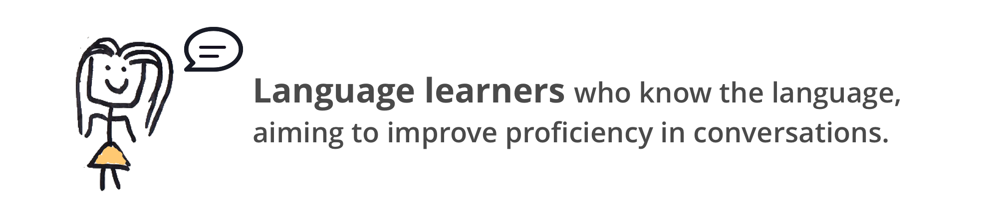

User Research
Why Smart Speaker?

In the initial user research phrase, we explored possibilities of using smart speaker to help language learning.

We created affinity wall out of interview notes.

Click to see the document
Voice assistant is a suitable tool for language learner’s needs:
“I don’t feel it is easy to ask people to just practice speaking, because everyone has their own busy work to deal with”
“I don’t feel it is easy to ask people to just practice speaking, because everyone has their own busy work to deal with”
Based on the analysis, we decided to target:
